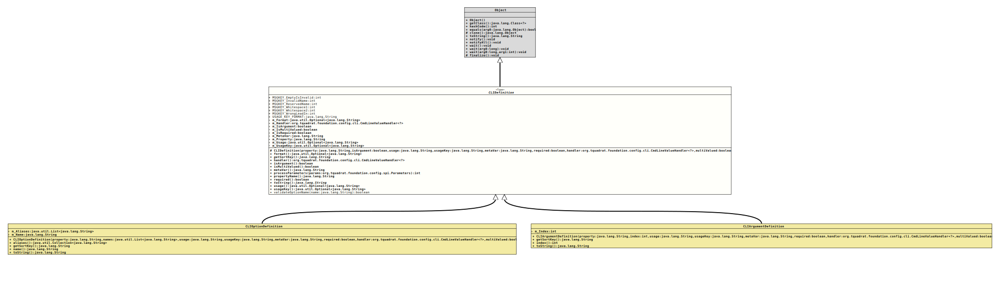

Class CLIDefinition
java.lang.Object
org.tquadrat.foundation.config.spi.CLIDefinition
- Direct Known Subclasses:
CLIArgumentDefinition,CLIOptionDefinition
@ClassVersion(sourceVersion="$Id: CLIDefinition.java 938 2021-12-15 14:42:53Z tquadrat $")
@API(status=STABLE,
since="0.0.1")
public abstract class CLIDefinition
extends Object
Base class for the run-time copies of the
@Option or
@Argument
annotation. By definition, unnamed options are arguments, and named options
are real command line options.- Author:
- Thomas Thrien (thomas.thrien@tquadrat.org)
- Thanks to:
- Mark Sinke
- Version:
- $Id: CLIDefinition.java 938 2021-12-15 14:42:53Z tquadrat $
- Since:
- 0.0.1
- See Also:
- UML Diagram
-

UML Diagram for "org.tquadrat.foundation.config.spi.CLIDefinition"
{kind=link}
-
Field Summary
FieldsModifier and TypeFieldDescriptionThe optional format string.private final CmdLineValueHandler<?>The handler that is used to parse and store the option or argument value.private final booleantrueif this is an argument,falseif it is an option.private final booleantrueif the target property is multi-valued,falseotherwise.private final booleantrueif the option or argument is required,falseotherwise.private final StringThe name of the meta variable that is used in examples.private final StringThe name of the property.The usage text.The resource key for the usage text.static final intThe message indicating that the empty String is not allowed as an option name.static final intThe message indicating an invalid option name.static final intThe message indicating that the option name is reserved.static final intThe message indicating a whitespace character as option name.static final intThe message indicating a whitespace character as part of an option name.static final intThe message indicating an invalid lead-in for an option name.static final StringThe format for the default usage keys. -
Constructor Summary
ConstructorsModifierConstructorDescriptionprotectedCLIDefinition(String property, boolean isArgument, String usage, String usageKey, String metaVar, boolean required, CmdLineValueHandler<?> handler, boolean multiValued, String format) Creates a newCLIDefinitioninstance. -
Method Summary
Modifier and TypeMethodDescriptionformat()Returns the optional format.abstract StringReturns the sort key for the option or argument.final CmdLineValueHandler<?>handler()Returns the handler.final booleanReturns a flag that indicates whether this is the definition for an argument or an option.final booleanReturns a flag that indicates whether this option or argument is multi-valued.final StringmetaVar()The name of the meta variable.final intprocessParameters(Parameters params) Processes the given parameter(s).final StringReturns the property name for this CLI element.final booleanrequired()Returns a flag indicating if the option or argument is mandatory.abstract StringtoString()usage()Returns the usage text.usageKey()Returns the resource key for the usage text.static final booleanvalidateOptionName(String name) Checks whether the given name for a command line option is valid.
-
Field Details
-
MSGKEY_EmptyIsInvalid
The message indicating that the empty String is not allowed as an option name.- See Also:
-
MSGKEY_InvalidName
The message indicating an invalid option name.- See Also:
-
MSGKEY_ReservedName
The message indicating that the option name is reserved.- See Also:
-
MSGKEY_Whitespace1
The message indicating a whitespace character as option name.- See Also:
-
MSGKEY_Whitespace2
The message indicating a whitespace character as part of an option name.- See Also:
-
MSGKEY_WrongLeadIn
The message indicating an invalid lead-in for an option name.- See Also:
-
USAGE_KEY_FORMAT
The format for the default usage keys.
The resource bundle key for a
USAGEtext is prepended with the name of the class that defines it. -
m_Format
The optional format string. -
m_Handler
The handler that is used to parse and store the option or argument value. -
m_IsArgument
trueif this is an argument,falseif it is an option. -
m_IsMultiValued
trueif the target property is multi-valued,falseotherwise. -
m_IsRequired
trueif the option or argument is required,falseotherwise. -
m_MetaVar
The name of the meta variable that is used in examples. -
m_Property
The name of the property. -
m_Usage
The usage text. -
m_UsageKey
The resource key for the usage text.
-
-
Constructor Details
-
CLIDefinition
protected CLIDefinition(String property, boolean isArgument, String usage, String usageKey, String metaVar, boolean required, CmdLineValueHandler<?> handler, boolean multiValued, String format) Creates a newCLIDefinitioninstance.- Parameters:
property- The name of the property.isArgument-truefor an argument,falsefor an option.usage- The usage text.usageKey- The resource bundle key for the usage text.metaVar- The meta variable name.required-trueif the argument or option is mandatory.handler- The handler for the option or argument value.multiValued-trueif the option or argument allows more than one value.format- The optional format.
-
-
Method Details
-
format
Returns the optional format.- Returns:
- An instance of
Optionalthat holds the format. - See Also:
-
getSortKey
Returns the sort key for the option or argument.- Returns:
- The sort key.
-
handler
Returns the handler.- Returns:
- The handler
-
isArgument
Returns a flag that indicates whether this is the definition for an argument or an option. -
isMultiValued
Returns a flag that indicates whether this option or argument is multi-valued.- Returns:
trueif multi-valued,falseotherwise.
-
metaVar
The name of the meta variable.- Returns:
- The meta variable.
-
processParameters
Processes the given parameter(s).- Parameters:
params- A reference to the command line arguments as for this option or argument definition. This method can use this object to access the values if necessary. The object is valid only during the method call.- Returns:
- The number of command line arguments consumed by this method. For example, it will return 0 if option defined by this instance does not take any parameters.
- Throws:
CmdLineException- Parsing the parameter(s) failed.
-
propertyName
Returns the property name for this CLI element.- Returns:
- The property name.
-
required
Returns a flag indicating if the option or argument is mandatory.- Returns:
trueif the argument or option is required,falseotherwise.- See Also:
-
toString
-
usage
Returns the usage text.- Returns:
- An instance of
Optionalthat holds the usage text.
-
usageKey
Returns the resource key for the usage text.- Returns:
- An instance of
Optionalthat holds the key for the usage text.
-
validateOptionName
Checks whether the given name for a command line option is valid.- Parameters:
name- The intended name for the command line option.- Returns:
trueif the given name is valid,falseotherwise.- Throws:
IllegalArgumentException- The given name is invalid.
-